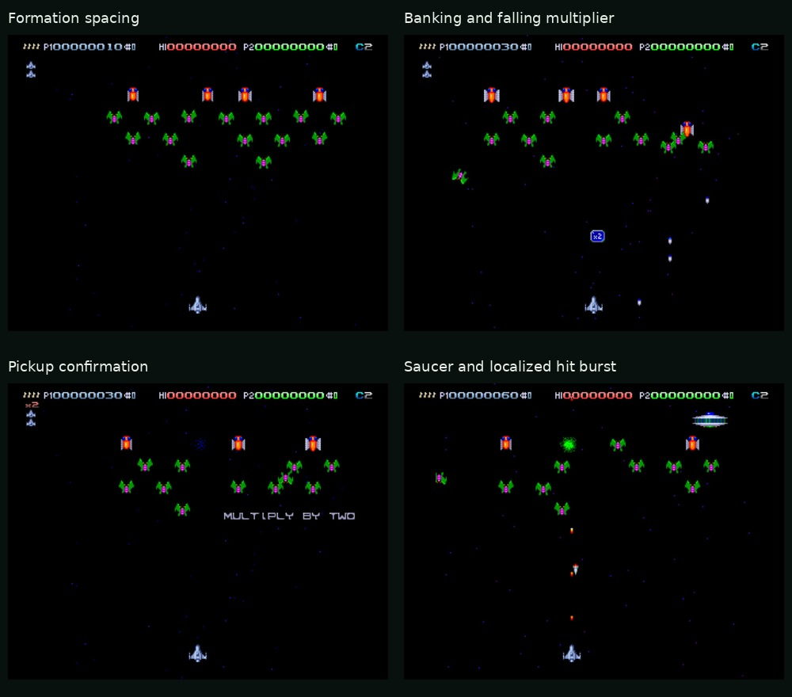

Supplied reference · Amiga, 1995

Where the reference remains stronger
- Bright threats against a sparse, dark playfield.
- Observed banking changes the enemy silhouette.
- Localized effects leave most of the field readable.
Deluxe Galaga v2.6, not the original Namco arcade ROM. These are sampled emulator scenes, not full-campaign coverage.
Tree Force · reviewed candidate
Improvements already present
- Tree Hero/Arborwing and the forest identity retained.
- Path-facing enemies, two wing poses and better contrast.
- Attack warnings, hit flashes and boss/HUD clearance repaired.
390px review captures. The purple banner is the practice harness, not production artwork. Screens are fitted for comparison, not equal-resolution measurements.